NIHAO XXII: إدخال تشكل الثقوب السوداء وتراكمها وتغذيتها الراجعة في مجموعة محاكاة NIHAO
الملخص
نقدم خوارزميات لفيزياء الثقوب السوداء، أي لتشكل الثقوب السوداء وتراكمها وتغذيتها الراجعة، ضمن مشروع NIHAO (التحقيق العددي في مئة جرم فيزيائي فلكي) لمحاكاة المجرات. ويتيح لنا ذلك دراسة المجرات الإهليلجية عالية الكتلة، حيث يعتقد عموما أن التغذية الراجعة من الثقب الأسود المركزي تؤثر تأثيرا مهما في تطورها. كما نوسع مجموعة NIHAO بإضافة 45 محاكاة تشمل كتلا للهالات من إلى ، ونعيد محاكاة خمس مجرات من عينة NIHAO الأصلية مع فيزياء الثقوب السوداء، لها كتل هالات من إلى . تحتوي NIHAO الآن على 144 مجرة مختلفة، وبذلك تمتلك أكبر عينة من محاكيات التكبير الموجه للمجرات، ممتدة عبر كتلا للهالات من إلى . نركز في هذه الورقة على اختبار الخوارزميات ومعايرة معاملاتها الحرة بمقارنة علاقة الكتلة النجمية بكتلة الهالة وعلاقة كتلة الثقب الأسود بالكتلة النجمية. ونبحث أيضا تشتت هاتين العلاقتين، ونجد أنه دالة متناقصة مع الزمن وبذلك يتفق مع الرصد. بالنسبة إلى اختيارنا المرجعي للمعاملات ننجح في إخماد تشكل النجوم في الأجسام التي تتجاوز كتلة هالة قدرها ، محولين إياها إلى مجرات حمراء وميتة.
keywords:
الطرائق: عددية – المجرات: نشطة – المجرات: التطور – المجرات: التشكل – المجرات: النوى – الكوازارات: عامة.1 مقدمة
أصبح من الراسخ الآن أن الثقوب السوداء توجد في مراكز معظم المجرات تقريبا (مثلا، Kormendy & Richstone, 1995; Magorrian et al., 1998)، وأنها مرتبطة بمجراتها المضيفة. وتتمثل الفكرة العامة التي عرضها Di Matteo et al. (2005) في أن التغذية الراجعة التي يوفرها الثقب الأسود المركزي تسخن غاز المجرة ثم تخمد تشكل النجوم وتراكم الثقب الأسود اللاحق، فتحولها إلى مجرة إهليلجية ‘حمراء وميتة’. وفي هذا الإطار يؤدي هذا التطور المشترك إلى أن ترتبط المجرة، أي تشتت سرعتها (مثلا، Ferrarese & Merritt, 2000; Gebhardt et al., 2000) أو كتلة انتفاخها (مثلا، Kormendy & Richstone, 1995; Häring & Rix, 2004)، بكتلة الثقب الأسود. غير أن بعض الأعمال (مثلا، Jahnke & Macciò, 2011) تجادل بأن الترابطات بين المجرة وثقبها الأسود المركزي لا تعني بالضرورة وجود صلة فيزيائية بينهما.
أثبتت المحاكيات العددية نجاحا كبيرا في دراسة تشكل المجرات وتطورها، مما أدى إلى تطوير عدد من المشاريع خلال السنوات الأخيرة. فعلى سبيل المثال، تعد Illustris (Vogelsberger et al., 2014) وIllustrisTNG (Pillepich et al., 2018) وMagneticum Pathfinder (Dolag et al., 2016) وMassiveBlack-II (Khandai et al., 2015) وEAGLE (Schaye et al., 2015) محاكيات هيدروديناميكية لحجوم كونية، في حين تتكون FIRE (Hopkins et al., 2014) وAuriga (Grand et al., 2016) من محاكيات تكبير موجه لمجرات منفردة.
مشروع NIHAO (Wang et al., 2015) هو مجموعة من محاكيات تكبير موجه كونية هيدروديناميكية للمجرات، ويمتاز بأنه يجمع بين (i) دقة عالية تبلغ جسيم لكل هالة، (ii) مجال واسع من كتل الهالات يمتد من الأقزام إلى كتل مماثلة لدرب التبانة ( إلى )، و (iii) حجم عينة كبير يبلغ 100 مجرة. ينجح NIHAO في إعادة إنتاج علاقة الكتلة النجمية بكتلة الهالة، وهي من أكثر القيود الأساسية في تشكل المجرات وتطورها، من الانزياح الأحمر حتى الانزياح الأحمر ، كما يطابق علاقة معدل تشكل النجوم بالكتلة النجمية. لكن مجموعة NIHAO لم تكن، حتى الآن، تتضمن مجرات إهليلجية عالية الكتلة، لأن التغذية الراجعة النجمية المنفذة في NIHAO غير كافية لتنظيم تشكل النجوم في المجرات الإهليلجية (Dutton et al., 2015). ومن المقبول عموما الآن (Croton et al., 2006) أن تغذية الثقوب السوداء الراجعة مطلوبة عند الكتل الأعلى لإعادة إنتاج الانخفاض الحاد في دالة الكتلة النجمية ولتكوين مجرات حمراء وميتة.
هدف هذه الورقة هو إدخال خوارزميات لتشكل الثقوب السوداء وتراكمها وتغذيتها الراجعة في مشروع NIHAO، وتوسيع مجموعة NIHAO لتشمل مجرات إهليلجية عالية الكتلة. ونركز على اختبار الخوارزميات ومعايرة المعاملات الحرة اعتمادا على العلاقتين المرصودتين، الكتلة النجمية مقابل كتلة الهالة وكتلة الثقب الأسود مقابل الكتلة النجمية، كما نبحث كيفية تطور تشتت هاتين العلاقتين مع الزمن ونقارنه بالرصد. في القسم 2 نستعرض خصائص مشروع NIHAO. نقدم الخوارزميات المستخدمة لتشكل الثقوب السوداء وتراكمها وتغذيتها الراجعة في القسم 3، والشروط الابتدائية في القسم 4. في القسم 5 نعرض نتائجنا، وفي القسم 6 ندرس تأثير المعاملات الحرة للخوارزميات في المحاكيات. وفي القسم 7 نلخص نتائجنا.
2 مشروع NIHAO
يستخدم NIHAO نسخة محدثة (Keller et al., 2014) من شيفرة TreeSPH المسماة Gasoline2 (Wadsley et al., 2004, 2017). تستخدم المحاكيات كونية LCDM مسطحة بمعاملات مأخوذة من Planck Collaboration et al. (2014).
يتكون العمود الفقري لمشروع NIHAO من محاكيات كونية للمادة المظلمة فقط بأحجام صناديق تبلغ 60 و20 Mpc/h من Dutton & Macciò (2014)، ومن صندوق جديد حجمه 15 Mpc/h يحوي جسيم. تطور هذه المحاكيات حتى ، ثم تختار الهالات من هذه الصناديق وتعاد محاكاتها منفردة بدقة أعلى وبوجود جسيمات غازية.
لجميع المجرات الدقة النسبية نفسها عبر مجال الكتلة كله، أي جسيمات مادة مظلمة داخل نصف القطر الفيريالي عند . وتختار كتل الجسيمات وأطوال تليين القوة بحيث تحل هيئة الكتلة عند 1 في المئة من نصف القطر الفيريالي. وتساوي النسبة الابتدائية بين كتلتي جسيمات المادة المظلمة والغاز النسبة الكونية بين كتلتي المادة المظلمة والباريونات، وهي . ويكون طول التليين لجسيمات الغاز والنجوم أصغر بمقدار مرة من طول التليين لجسيمات المادة المظلمة. اختيرت المعاملات الحرة لنموذج التغذية الراجعة النجمية وتغذية المستعرات العظمى لتطابق علاقة - لمجرة واحدة شبيهة بدرب التبانة عند .
يوفر التبريد عبر الهيدروجين والهيليوم وخطوط فلزية متعددة ضمن خلفية فوق بنفسجية مؤينة منتظمة (Shen et al., 2010)، ويشمل ذلك التأين الضوئي وتسخين الخلفية فوق البنفسجية (Haardt & Madau, 2012) وتبريد كومبتون.
تتشكل النجوم من جسيمات غازية تتجاوز عتبة كثافة وحرارة (، ) بمعدل ، حيث إن هو الزمن الديناميكي لجسيم الغاز، و كثافته، و كتلته، و كفاءة تشكل النجوم.
تنمذج تغذية المستعرات العظمى الراجعة بصياغة الموجة الانفجارية لـ Stinson et al. (2006). وتقذف النجوم ذات الكتلة الفلزات والطاقة إلى جسيمات الغاز المحيطة بعد 4 Myr من تشكلها. ويؤخر تبريد هذه الجسيمات الغازية لمدة . وقبل أن تنتج النجوم الضخمة مستعرا أعظم، فإنها توفر ‘تغذية راجعة نجمية مبكرة’ (Stinson et al., 2013)، أي إن 13 في المئة من التدفق النجمي الكلي يحقن في الغاز المحيط على هيئة طاقة حرارية. ولا يطبق أي تأخير للتبريد في هذه الحالة. ونحيل إلى Wang et al. (2015) لمزيد من التفاصيل عن مشروع NIHAO.
3 الطرائق الحاسوبية لفيزياء الثقوب السوداء
تنمذج الثقوب السوداء على أنها جسيمات بالعة (Bate et al., 1995) لا تتفاعل مع بيئتها إلا عبر القوى الثقالية، ويمكنها تراكم المادة من جسيمات الغاز المجاورة. بالنسبة إلى تراكم الثقوب السوداء وتغذيتها الراجعة، نختار النماذج التي قدمها Springel et al. (2005)، لأنها الأكثر استخداما ومن ثم اختبارا، ولأنها معروفة بقدرتها على إنتاج العلاقة الصحيحة بين كتلة الثقب الأسود والمكون النجمي (Di Matteo et al., 2005).
3.1 تشكل الثقوب السوداء
نتبع نهجا شائعا لنمذجة تشكل الثقوب السوداء: عندما تتجاوز هالة مركزية11 1 لا نضع بذورا في الهالات الفرعية. كتلة عتبة ، نحول جسيم الغاز (أو جزءا منه) ذا الجهد الثقالي الأدنى إلى ثقب أسود بكتلة بذرة .22 2 على سبيل المثال، يستخدم Sijacki et al. (2007) القيمتين و M☉، ويستخدم Di Matteo et al. (2008) وSchaye et al. (2015) القيمتين و M☉، ويستخدم Schaye et al. (2010) القيمتين و، ويستخدم Sijacki et al. (2015) القيمتين و. تعثر أداة AMIGA Halo Finder (AHF, Gill et al., 2004; Knollmann & Knebe, 2009) على الهالات وكتلها؛ انظر القسم 4 لمزيد من التفاصيل. نتبع Sijacki et al. (2007) ونستخدم القيم M☉ و. ويستخدم نموذج بديل لتشكل الثقوب السوداء في محاكيات Romulus (Tremmel et al., 2017)، حيث يحدث تشكل الثقوب السوداء عندما يحقق الغاز عتبات محددة للفلزية والكثافة والحرارة.
3.2 إعادة تموضع الثقوب السوداء
في المحاكيات على مقياس المجرات، يمكن لتأثيرين أن يجعلا موضع الثقب الأسود غير مطابق لمركز الهالة: (i) تؤدي النسبة الصغيرة بين كتلة الثقب الأسود وكتلة جسيمات الغاز/النجوم/المادة المظلمة إلى حركات عشوائية لجسيم الثقب الأسود بسبب زخم الغاز المتراكم والتفاعلات الثقالية مع الجسيمات القريبة. (ii) في حالة اندماج هالتين، يؤدي الاحتكاك الديناميكي إلى غوص الثقب الأسود نحو مركز الهالة المتشكلة حديثا. غير أن المحاكيات على مقياس المجرات تستخف عموما بالاحتكاك الديناميكي على المقاييس الصغيرة بسبب عدم كفاية الدقة.
للتعويض عن هذه التأثيرات طورت عدة نماذج في السنوات الأخيرة: يسند Debuhr et al. (2011, 2012) وAnglés-Alcázar et al. (2017) إلى الثقب الأسود ‘كتلة ديناميكية’ أو ‘كتلة متتبعة’، تكون أكبر من كتلة الثقب الأسود الفعلية بعدة رتب مقدار، لمنع الثقب الأسود من الابتعاد كثيرا عن مركز الهالة. يعيد Johansson et al. (2009) تموضع الثقب الأسود إلى جسيم الغاز الواقع ضمن طول تمليس SPH للثقب الأسود والذي يملك أدنى جهد ثقالي. ويعيد Booth & Schaye (2009) أيضا تموضع الثقب الأسود إلى جسيم الغاز المجاور ذي أدنى جهد ثقالي، لكن فقط إذا كانت السرعة النسبية بين الثقب الأسود وجسيم الغاز الأشد ارتباطا ثقاليا أصغر من 25 في المئة من سرعة الصوت المحلية، وإذا كانت كتلة الثقب الأسود أصغر من عشرة أضعاف كتلة جسيم الغاز الابتدائية. تجبر محاكيات IllustrisTNG (Sijacki et al., 2015) جسيم الثقب الأسود على أن يقع عند حد الجهد الأدنى في هالته المضيفة. وتجبر محاكيات EAGLE (Schaye et al., 2015) الثقوب السوداء ذات الكتلة الأصغر من 100 ضعف كتلة جسيم الغاز على الهجرة نحو حد الجهد الثقالي الأدنى في هالتها المضيفة. وتتضمن محاكيات Magneticum Pathfinder (Hirschmann et al., 2014) ومحاكيات Romulus (Tremmel et al., 2017; Tremmel et al., 2015) نموذجا دون شبكي لحساب قوة الاحتكاك الديناميكي المؤثرة في الثقب الأسود.
غير أن نقل الثقب الأسود إلى حد الجهد الأدنى في هالته المضيفة يمكن أن يجعله يتحرك مسافات كبيرة جدا (مجموع نصفي القطر الفيرياليين للهالتين، أي عدة ) في حالة اندماج هالتين. وفضلا عن ذلك، إذا انفصلت هاتان الهالتان، اللتان اندمج ثقباهما الأسودان للتو، مرة أخرى، فإن الهالة التي فقدت ثقبها الأسود ستزرع فيها بذرة جديدة. ولتجنب هذه المشكلات، نضبط في كل خطوة زمنية كبرى33 3 يقسم زمن المحاكاة البالغ 13.8 Gyr إلى 1024 خطوة زمنية كبرى مقدار كل منها 13.4 Myr. موضع الثقب الأسود وسرعته على قيم جسيم المادة المظلمة الواقع ضمن عشرة أطوال تليين والذي يملك أدنى جهد ثقالي. قد يكون استخدام جسيم النجم ذي أدنى جهد ثقالي إشكاليا عند الانزياحات الحمراء العالية، عندما لا يوجد إلا عدد قليل من جسيمات النجوم أو لا توجد أصلا. كما أن وضع الثقب الأسود عند جسيم الغاز ذي أدنى جهد ثقالي سيزيد وزنه في النواة اصطناعيا، ومن ثم كثافته ومن ثم معدل تراكم الثقب الأسود. وفضلا عن ذلك، فإن استخدام جسيم غازي تلقى مؤخرا تغذية راجعة ويتدفق إلى الخارج قد يؤدي إلى سرعات غير ملائمة للثقب الأسود و/أو قفزات كبيرة في موضعه. (انظر Wurster & Thacker, 2013, لمناقشة مشكلة مشابهة.).
3.3 اندماج الثقوب السوداء
يندمج ثقبان أسودان عندما تصبح المسافة بينهما أصغر من مجموع طولي التليين لهما. ويرث الثقب الأسود الناتج موضع وسرعة وتسارع مركز الكتلة الباريوني لسلفيه، وتكون كتلته مجموع كتلتي السلفين، ويحسب معدل تراكمه في الخطوة الزمنية التالية.
3.4 تراكم الثقوب السوداء
نحسب معدل تراكم الثقب الأسود باستخدام صياغة Bondi-Hoyle-Lyttleton الشائعة الاستخدام44 4 مثلا في Di Matteo et al. (2005) وSpringel et al. (2005) وColberg & Di Matteo (2008) وDi Matteo et al. (2008) وBooth & Schaye (2009) وCroft et al. (2009) وJohansson et al. (2009) وChoi et al. (2012). (Hoyle & Lyttleton, 1939; Bondi & Hoyle, 1944; Bondi, 1952)
| (1) |
حيث إن هي كتلة الثقب الأسود، و و و هي كثافة الغاز المحيط بالثقب الأسود وسرعة الصوت فيه وسرعته. أدخل Springel et al. (2005) المعامل أول مرة لمراعاة الدقة المحدودة لهذه المحاكيات، وعادة ما يضبط على (انظر مثلا الجدول 2 في Booth & Schaye, 2009). غير أن دقتنا أعلى مما في الأعمال السابقة التي تستخدم صياغة Bondi-Hoyle-Lyttleton، ولذلك نستخدم معامل تراكم مقداره ونبرر هذا الاختيار بدراسة للمعاملات في القسم 6.
يحد معدل تراكم الثقب الأسود بمعدل Eddington (Eddington, 1921)
| (2) |
مع مقياس الزمن Salpeter (Salpeter, 1964) والكفاءة الإشعاعية (Shakura & Sunyaev, 1973). وعندئذ يكون معدل تراكم الثقب الأسود
| (3) |
في كل خطوة زمنية ، يراكم الثقب الأسود الكتلة من جسيم أو جسيمات الغاز الأكثر ارتباطا ثقاليا بالثقب الأسود. ويضاف زخم الكتلة المتراكمة إلى زخم الثقب الأسود. يمكن للثقب الأسود أن يراكم كسورا من جسيم غازي، مما قد يؤدي إلى جسيمات غازية ذات كتل صغيرة جدا. إذا هبطت كتلة جسيم غازي إلى أقل من 20 في المئة من كتلته الابتدائية فإنه يحذف وتوزع كتلته وزخمه على جسيمات الغاز المحيطة موزونة بنواة SPH.
لتجنب التسارعات الكبيرة جدا، ومن ثم الخطوات الزمنية الصغيرة جدا للجسيمات القريبة من الثقب الأسود، وكذلك تجنب استرخاء جسمين، نزيد طول تليين الثقب الأسود مع نموه. وبما أن طول تليين الجسيمات عديمة التصادم في محاكياتنا يتناسب مع الجذر التربيعي لكتلتها، فإننا نضرب طول تليين الثقب الأسود في عندما تزداد كتلته بمقدار .
لا يؤثر ازدياد طول تليين الثقب الأسود تأثيرا مهما في محيطه، إذ تكون قوته الثقالية عادة أصغر بكثير من القوة الثقالية للنجوم المحيطة بالمركز. فعلى سبيل المثال، في المجرة g7.92e12 التي نستخدمها لدراسة المعاملات في القسم 6، تكون كتلة النجوم ضمن من الثقب الأسود أكبر من كتلة الثقب الأسود بما لا يقل عن 25 مرة في جميع الأوقات.
لا نفرض حدا على المسافة التي يمكن أن تبعدها الجسيمات كي يجري تراكمها. غير أنه في كل خطوة زمنية عادة لا يراكم أكثر من جسيم واحد، وهذا الجسيم هو الأشد ارتباطا، ولذلك يكون عادة الأقرب إلى الثقب الأسود.
طورت طرائق بديلة لنمذجة تراكم الغاز على الثقوب السوداء: يفترض Booth & Schaye (2009, 2010) أن معامل التراكم ليس ثابتا، بل هو دالة في كثافة الغاز، في حين أن في محاكيات EAGLE (Schaye et al., 2015) وعند Rosas-Guevara et al. (2015) هو نسبة مقياس زمن Bondi إلى مقياس الزمن اللزج. يعدل Tremmel et al. (2017) صياغة Bondi-Hoyle-Lyttleton لأخذ الزخم الزاوي للغاز في الحسبان. ويحسب Debuhr et al. (2011, 2012) معدل تراكم الثقب الأسود اعتمادا على التطور اللزج لقرص تراكم يحيط بالثقب الأسود. ويحسب Hopkins & Quataert (2011) ومحاكيات FIRE (Anglés-Alcázar et al., 2017) معدل تراكم الثقب الأسود اعتمادا على الزخم الزاوي وعزوم الثقالة حول الثقب الأسود.
3.5 التغذية الراجعة للثقوب السوداء
ينتج تراكم الثقب الأسود لمعانا قدره
| (4) |
مع سرعة الضوء ، ونفترض أن كسرا55 5 القيم الشائعة لكفاءة التغذية الراجعة هي (Di Matteo et al., 2005; Springel et al., 2005; Sijacki et al., 2007; Di Matteo et al., 2008; Johansson et al., 2009)، و (Booth & Schaye, 2009, 2010; Schaye et al., 2015)، و (Tremmel et al., 2017). مقداره من هذا اللمعان متاح على هيئة طاقة حرارية للغاز المحيط بالثقب الأسود. ومن ثم يتلقى الغاز طاقة لكل وحدة زمن مقدارها
| (5) |
توزع موزونة بالنواة بين أقرب 50 جسيم غازي. ولتجنب سرعات صوت كبيرة جدا، ومن ثم خطوات زمنية صغيرة جدا، نحد الطاقة النوعية لجسيم غازي واحد عند .
هناك عدد من النماذج البديلة للتغذية الراجعة للثقوب السوداء. يستخدم Sijacki et al. (2007) نمطا إضافيا من التغذية الراجعة يعمل عند معدلات تراكم منخفضة للثقب الأسود، وينمذج بحقن ‘فقاعات’ في المجرة المضيفة. ويستخدم Debuhr et al. (2011, 2012) وChoi et al. (2012) ‘تغذية راجعة حركية’ تضيف زخما وكتلة إلى الغاز المحيط بالثقب الأسود.
4 الشروط الابتدائية وخصائص المجرات والمعاملات
ترد مجراتنا وخصائصها في الجدول 1 في نهاية هذه الورقة. نأخذ خمس مجرات من مجموعة NIHAO الأصلية لها كتلة جسيم مادة مظلمة مقدارها ، وكتلة جسيم غازي مقدارها ، وطول تليين للمادة المظلمة مقداره ، وطول تليين لجسيم الغاز مقداره . وتنشأ هذه من محاكاة كونية للمادة المظلمة فقط بحجم صندوق قدره 60 Mpc و6003 جسيم. ومن الصندوق نفسه نأخذ بالإضافة إلى ذلك سبع مجرات جديدة بالدقة نفسها تصل كتل هالاتها عند إلى . ثم نأخذ 38 مجرة جديدة لها كتلة جسيم مادة مظلمة مقدارها ، وكتلة جسيم غازي مقدارها ، وطول تليين للمادة المظلمة مقداره ، وطول تليين لجسيم الغاز مقداره . وتبلغ كتل هالاتها عند من إلى ، وتنشأ من محاكاة كونية للمادة المظلمة فقط بحجم صندوق قدره 90 Mpc و4503 جسيم. أعيدت محاكاة بضع مجرات من دون تغذية راجعة للثقوب السوداء، وهذه لا تحتوي على مدخل لكتلة الثقب الأسود في الجدول 1.
يشير اسم المجرة إلى كتلة هالتها عند في المحاكيات الكونية للمادة المظلمة فقط، أي إن كتلة هالتها في المحاكيات المعروضة في هذه الورقة قد تكون مختلفة قليلا. نستخدم أداة AMIGA Halo Finder (AHF, Gill et al., 2004; Knollmann & Knebe, 2009) لتحديد الهالات وخصائصها. تحدد AHF فرط الكثافات على شبكة مصقولة تكيفيا بوصفها مراكز هالات محتملة. ثم تعرف هذه الهالات على أنها كرة نصف قطرها وكتلتها بحيث تساوي كثافتها 200 ضعفا من كثافة المادة الحرجة الكونية. تعرف الكتلة النجمية لمجرة ما بأنها الكتلة المجمعة لكل الجسيمات النجمية ضمن نصف قطر (انظر Munshi et al., 2013, لنهج مختلف في تعريف الكتلة النجمية لمجرة ما). بسبب الاندماجات قد تحتوي بعض المجرات على أكثر من ثقب أسود واحد، ونعرف الثقب الأسود المركزي بأنه الأقرب إلى مركز المجرة. لا تحتوي أي من هالاتنا على متطفل ضمن 20 في المئة من نصف قطرها الفيريالي، وتحتوي على أقل من 20 متطفلين في المجموع، حيث إن المتطفل هو جسيم ينشأ من خارج منطقة التكبير الموجه. لدينا في المجموع 50 مجرة مع تغذية راجعة للثقوب السوداء و11 مجرة من دون تغذية راجعة للثقوب السوداء في هذه الورقة.
5 النتائج
يتحدد مقدار تغذية الثقوب السوداء الراجعة بمعدل تراكم الثقب الأسود، الذي يحدد بدوره كتلة الثقب الأسود. وبما أن تغذية الثقوب السوداء الراجعة تخمد تشكل النجوم، فإن من أقوى آثارها تقليل الكتلة النجمية للمجرة. لذلك نستخدم الكتلة النجمية للمجرة وكتلة الثقب الأسود لمعايرة نموذجنا، ومن ثم نستخدم علاقة الكتلة النجمية مقابل كتلة الهالة (-) وعلاقة كتلة الثقب الأسود مقابل الكتلة النجمية (-) للمعايرة. ونحلل أيضا تواريخ تشكل النجوم لثلاث من مجراتنا الجديدة للتأكد من أن تغذية الثقوب السوداء الراجعة تحدث أثرا مخمدا فيها. في هذا القسم نستخدم المعاملات المرجعية لنموذجنا، وهي معامل التراكم ، وكفاءة التغذية الراجعة ، وكتلة بذرة الثقب الأسود ، وكتلة عتبة الهالة .
نقارن علاقة - لدينا بنتائج مطابقة وفرة الهالات عند Moster et al. (2018) وBehroozi et al. (2013) وMoster et al. (2013). وتستند هذه إلى IMF لـ Chabrier (2003)، غير أن هناك أدلة على IMF ‘أثقل’ (غني بالنجوم منخفضة الكتلة، أي يحوي مزيدا من النجوم منخفضة الكتلة) في المجرات الضخمة (مثلا، Conroy & van Dokkum, 2012; Dutton et al., 2013a; Dutton et al., 2013b). لذلك، اتباعا لـ Dutton et al. (2013b)، نضيف تصحيحا
| (6) |
لـ و إلى من علاقات -، مما يزيد الكتلة النجمية للمجرات عالية الكتلة بعامل 2. وتعد علاقات Behroozi et al. (2013) وMoster et al. (2018) دالة في الكتلة الفيريالية للهالة، ونحولها إلى بتطبيق التصحيحات التي اقترحها Dutton & Macciò (2014).
يبين الشكل 1 علاقة - لمجراتنا مقارنة بنتائج مطابقة الوفرة، وتوفر محاكياتنا التي تتضمن تغذية راجعة للثقوب السوداء مطابقة جيدة. ولا تنحرف مجراتنا قليلا عن العلاقات المرصودة إلا عند كتل الهالات العالية جدا والمنخفضة جدا، لكن معظمها يبقى ضمن تشتت 1-سيغما للرصد. يبين الشكل 2 علاقة - لمجراتنا التي حوكيت من دون ثقوب سوداء، مقارنة بنظيراتها ذات الثقوب السوداء. ولا تقدم مطابقة جيدة للعلاقات المرصودة إلا المحاكيات التي تتضمن ثقوبا سوداء، مما يبين أهمية تغذية الثقوب السوداء الراجعة لتطور المجرات عالية الكتلة. يبين الشكل 3 علاقة - لمجراتنا عند انزياحات حمراء مختلفة مقارنة برصود من Kormendy & Ho (2013) وSani et al. (2011). وعند كل انزياح أحمر نلائم علاقة خطية لمحاكياتنا ونحسب تشتت 1-سيغما. ونطبق قصا عند 5-سيغما على بياناتنا لإزالة الشاذ عالي الكتلة، الظاهر في اللوحة الفرعية ، من حساب التشتت. تطابق نتائجنا علاقة Kormendy & Ho (2013) جيدا، ولا تقلل تقدير كتل الثقوب السوداء لبعض المجرات إلا عند الطرف الأدنى. ونعرض أيضا علاقة بين كتلة الهالة وكتلة الثقب الأسود في الشكل 4.
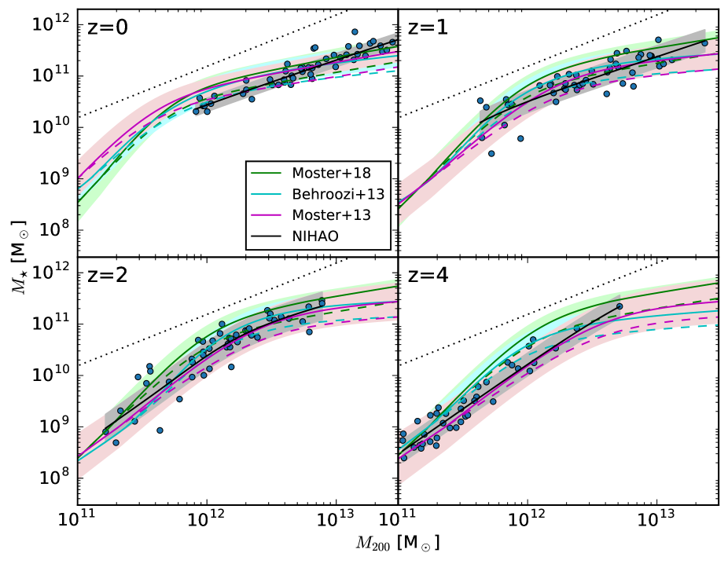
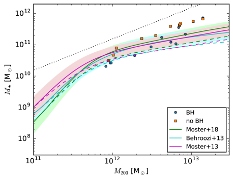
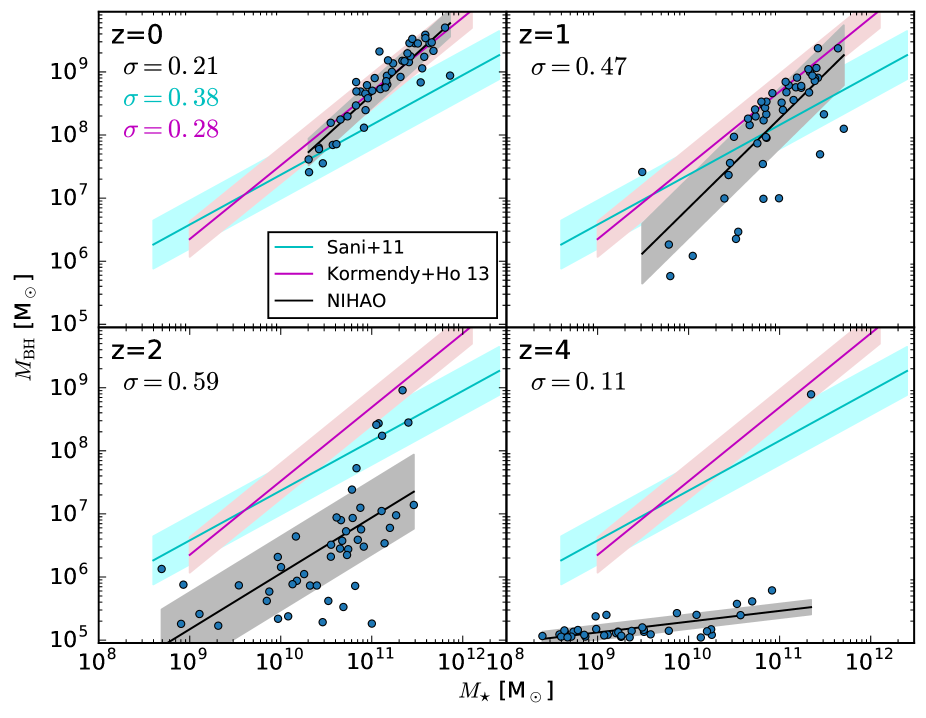
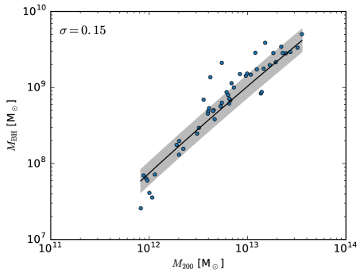
تشمل النجاحات الحديثة في إعادة إنتاج الكتل النجمية وكتل الثقوب السوداء الصحيحة في محاكيات المجرات مشروع EAGLE (Schaye et al., 2015)، الذي يتكون من محاكيات كونية تعيد إنتاج علاقة - في من 10.5 إلى 14.5 وعلاقة - في من 8 إلى 12. وتتفق علاقة - لمشروع Illustris (Genel et al., 2014; Vogelsberger et al., 2014) نوعيا على نحو جيد مع الرصد في من 10 إلى 14، كما أن علاقة - لديهم (في من 8 إلى 12) تتفق جيدا مع الرصد (Sijacki et al., 2015). وتعيد محاكيات IllustrisTNG (Weinberger et al., 2018) إنتاج علاقة - في من 8 إلى 12. كذلك تطابق محاكيات ROMULUS الكونية (Tremmel et al., 2017) علاقة - في من 10 إلى 13 وعلاقة - في من 9 إلى 11.5. وتطابق محاكيات Magneticum Pathfinder (Hirschmann et al., 2014) علاقة - في من 10.5 إلى 13.
يبين الشكل 5 تشتت علاقة - مقابل الزمن لمحاكياتنا ولعلاقات Moster et al. (2018) وBehroozi et al. (2013) وMoster et al. (2013). يعتمد تشتت علاقات Moster على الكتلة النجمية، لذلك نحسب التشتت لمجال الكتل النجمية الذي تغطيه محاكياتنا عند كل انزياح أحمر، ويعرض متوسطه وانحرافه المعياري في الشكل 5. نحرص على أن توجد عند كل انزياح أحمر 12 مجرات على الأقل في العينة وفق معيارنا الذي يشترط حدا أدنى قدره جسيم لكل مجرة. يتناقص تشتت جميع العلاقات عموما مع الزمن. ولا يرتفع تشتت علاقتنا إلا عند الانزياحات الحمراء الأعلى، وقد يكون ذلك ناجما عن إحصاءات العدد الصغير. يبقى تشتت علاقتنا دائما دون تشتت Moster et al. (2013)، ودون تشتت Behroozi et al. (2013) من أجل z<1.5. ويتفق تشتت Moster et al. (2018) جيدا مع محاكياتنا، إذ يكون أدنى من تشتتنا بقليل فقط من أجل z>1 وأعلى منه من أجل z<0.5.
يبين الشكل 6 تشتت علاقة - مقابل كتلة الهالة عند لعلاقات Behroozi et al. (2013) وMoster et al. (2018) وMoster et al. (2013)، ولمجرات NIHAO ذات الثقوب السوداء المعروضة في هذه الورقة (50 مجرة مقسمة إلى 3 حاويات)، ولـ 78 من مجرات NIHAO (مقسمة إلى 4 حاويات) التي لا تحتوي على ثقوب سوداء والمعروضة في Wang et al. (2015) لأربعة انزياحات حمراء مختلفة. ومن أجل يكون تشتتنا دون تشتت Moster et al. (2018) وMoster et al. (2013)، باستثناء كتل الهالات حول ، ودون تشتت Behroozi et al. (2013) لكتل الهالات فوق . يزداد التشتت عموما مع تناقص كتلة الهالة. ولا يظهر اتجاه واضح بوصفه دالة في الانزياح الأحمر. تتفق نتائجنا مع الدراسات السابقة للتشتت لدى Wechsler & Tinker (2018) وMatthee et al. (2017). وحتى الآن لا تستطيع إلا محاكيات NIHAO عرض التشتت لكتل هالات تغطي خمس رتب مقدار، أي تمتد من إلى .
يبين الشكل 7 تشتت علاقة - مقابل الزمن لمحاكياتنا ومع تشتت لعلاقتي Sani et al. (2011) وKormendy & Ho (2013). نحسب التشتت فقط للانزياحات الحمراء التي تتضمن ما لا يقل عن 12 مجرات في عينتنا. عند الانزياحات الحمراء العالية يهيمن على التشتت مقدار كتلة بذرة الثقب الأسود وربما إحصاءات العدد الصغير. ثم يزداد التشتت بشدة، قبل أن يتناقص خلال بقية التطور. وعند الانزياح الأحمر صفر يكون تشتت المحاكيات دون التشتت المرصود. وهذا متوقع لأننا نعرض هنا التشتت الداخلي في المحاكيات، وهو لا يأخذ في الحسبان الانحيازات والأخطاء الرصدية.
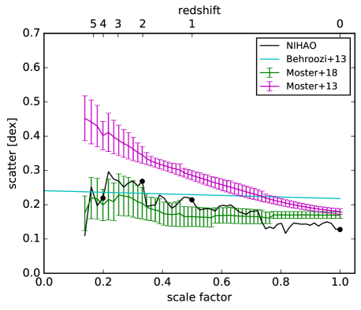
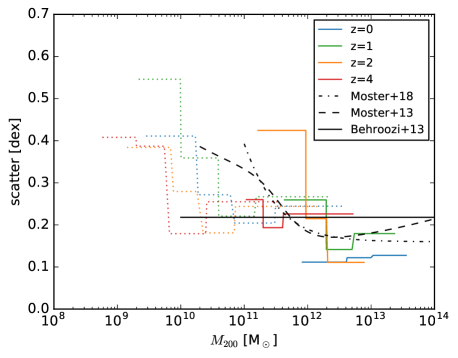
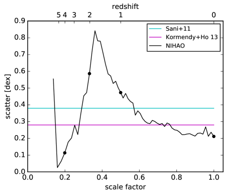
في الشكل 8 نعرض تاريخ تشكل النجوم، مع تغذية راجعة للثقوب السوداء ومن دونها، ومعدل تراكم الثقب الأسود لثلاث من مجراتنا. من دون التغذية الراجعة تظهر المجرات تشكلا مستمرا للنجوم حتى ، منتجة مجرات ضخمة زرقاء غير واقعية وغير مرصودة. ومع التغذية الراجعة تظهر المجرات طورا ابتدائيا من تشكل النجوم العالي، ثم تخمد لبقية تطورها. ويبلغ معدل تراكم الثقب الأسود ذروته قبل وقت قصير من بدء معدل تشكل النجوم في الانخفاض، مما يدل على أن تشكل النجوم يخمد بفعل تغذية الثقب الأسود الراجعة.
تظهر المجرات الثلاث كلها في الشكل 8 أن الثقب الأسود يصبح نشطا عند نحو 2 إلى 4 جيغاسنة. ولتحديد سبب هذه الزيادة ننظر إلى الشكل 9، الذي يبين معدل تراكم الثقب الأسود، وكتلة الثقب الأسود وكثافة الغاز عند موضع الثقب الأسود. يعطى معدل تراكم الثقب الأسود بصيغة Bondi في المعادلة 1، ويتحدد أساسا بكتلة الثقب الأسود وكثافة الغاز. في الخطوات الزمنية القليلة الأولى تؤدي الكميتان إلى معدل نمو منخفض للمجرات الثلاث كلها، وهو ما كان، لو استمر حتى الانزياح الأحمر صفر، سيؤدي إلى كتل نهائية للثقوب السوداء أقل من .
لكن بعد الخطوات الزمنية القليلة الأولى (9 خطوات أو 2.8 Gyr لـ g1.12e12، و18 خطوات أو 4.3 Gyr لـ g7.92e12، و5 خطوات أو 1.5 Gyr لـ g1.05e13) يشهد الثقب الأسود المركزي حدث اندماج واحدا أو أكثر مع ثقوب سوداء أخرى. ومن ثم تتضاعف كتلة الثقب الأسود تقريبا، مما يضاعف معدل تراكم الثقب الأسود أربع مرات تقريبا. ويصبح معدل تراكم الثقب الأسود الآن كبيرا بما يكفي لإحداث نمو مهم للثقب الأسود، وتؤدي كتلة الثقب الأسود المتزايدة باستمرار إلى معدل تراكم متزايد باستمرار، مما ينتج نوعا من ‘النمو المنفلت’. ويكتسب الثقب الأسود معظم كتلته بسبب تراكم الغاز، ولا تعمل اندماجات الثقوب السوداء إلا محفزا لمعدلات تراكم أعلى. فعلى سبيل المثال، تتكون الكتلة النهائية للثقب الأسود المركزي في المجرة g7.92e12 بنسبة 5 في المئة من ثقوب سوداء مندمجة وبنسبة 95 في المئة من غاز متراكم.
عندما يكون معدل تراكم الثقب الأسود، ومن ثم التغذية الراجعة، عاليا بما فيه الكفاية، فإنه يكون قادرا على إزالة كميات مهمة من الغاز من جوار الثقب الأسود، كما يدل عليه هبوط كثافة الغاز في الشكل 9. وتؤدي كتلة ثقب أسود متزايدة وكثافة غاز متناقصة إلى استقرار معدل تراكم الثقب الأسود عند قيمة ثابتة تقريبا، على الأقل خلال الجيغاسنوات القليلة التالية.
يشير عمل سابق (Anglés-Alcázar et al., 2017; Dubois et al., 2015) إلى أن نمو الثقوب السوداء ينظم بتدفق الغاز من المجرة المضيفة، وأن نمو الثقب الأسود لا يكون فعالا إلا بعد أن تصل المجرة إلى كتلة معينة. غير أن كثافة الغاز في عملنا لا تتغير تغيرا مهما في المراحل الأولى من نمو الثقب الأسود؛ بل إن اندماجات الثقوب السوداء حاسمة في تحفيز نمو مهم للثقب الأسود. وهذا يعني وجود كتلة حرجة للثقب الأسود لبداية تراكم الثقب الأسود من رتبة . وفضلا عن ذلك، يبرز أهمية تحفيز نمو فعال للثقب الأسود في المقام الأول، إلى جانب نمو الثقب الأسود ذاتي التنظيم في المراحل اللاحقة من تطور المجرات. غير أننا نشير إلى أن هذه التأثيرات ليست سوى نتيجة لصيغة Bondi التي تتناسب طرديا مع مربع كتلة الثقب الأسود، وقد تتغير إذا استخدمت مخططات تراكم أخرى.
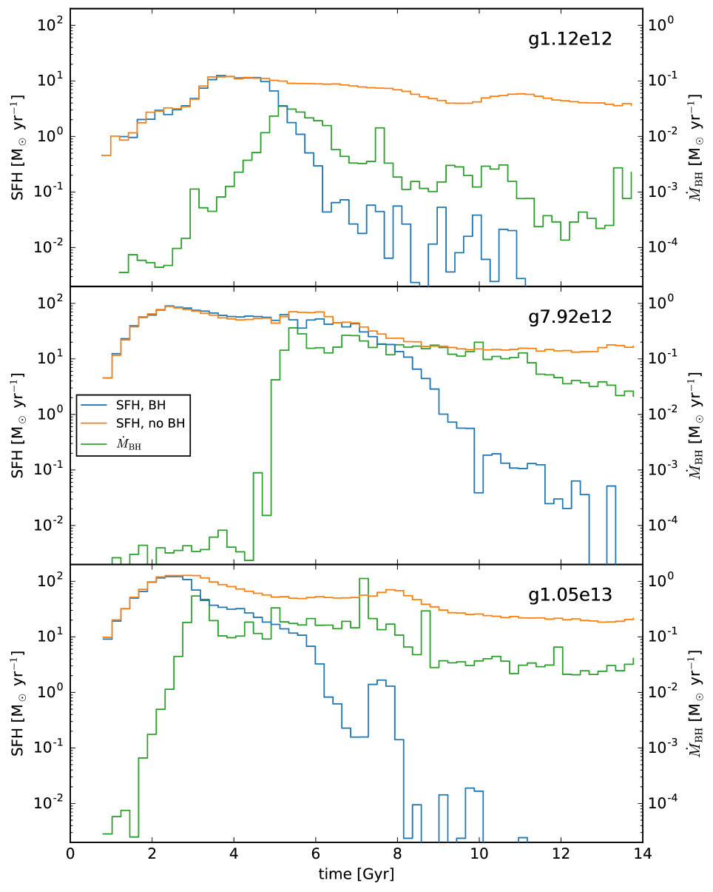
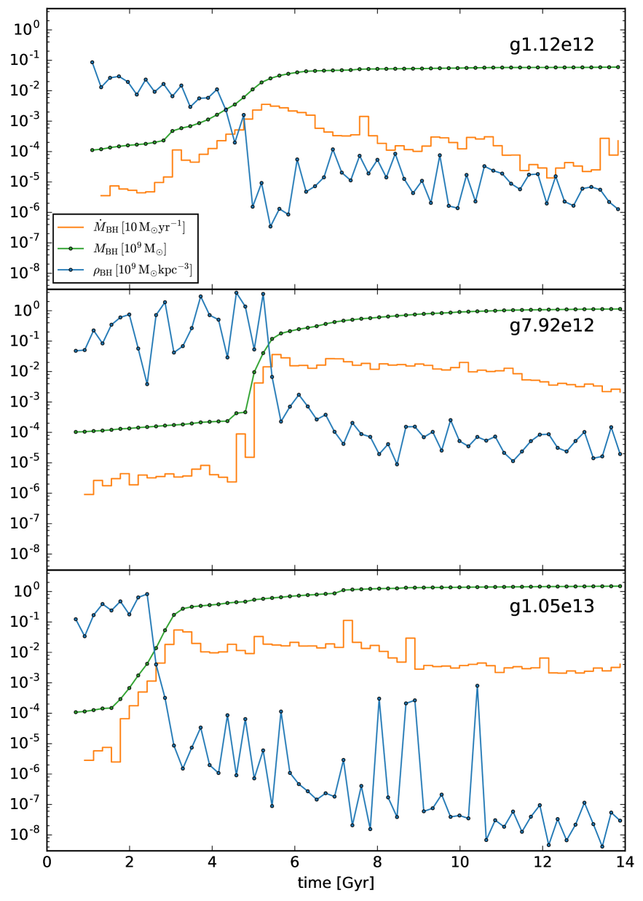
6 دراسة المعاملات
المعاملات المرجعية لنموذجنا هي معامل التراكم ، وكفاءة التغذية الراجعة ، وكتلة بذرة الثقب الأسود ، وكتلة عتبة الهالة . في هذا القسم نستكشف كيف يؤثر تغير هذه المعاملات في النموذج في علاقات - و-، ونبين أن معاملاتنا المرجعية اختيار معقول. ونقصر دراسة المعاملات على المجرتين g8.26e11 وg7.92e12، الأولى هي المجرة نفسها التي استخدمت في ورقة NIHAO الأولى Wang et al. (2015) لمعايرة التغذية الراجعة النجمية، أما الثانية فقد اختيرت لأنها أكبر بمرتبة مقدار واحدة في كتلة الهالة.
في دراسة المعاملات هذه نغير معاملا واحدا فقط في كل مرة، ومن ثم فمن الممكن أن يؤدي تغيير معاملات متعددة في الوقت نفسه إلى مطابقة أفضل لعلاقات التحجيم المرصودة. ويمكن تحقيق مزيد من التحسين بتغيير معاملات غير مرتبطة بتغذية الثقوب السوداء الراجعة، مثل المعاملات المتعلقة بالتغذية الراجعة النجمية، أو بتغيير نماذج تشكل الثقوب السوداء وتراكمها وتغذيتها الراجعة كما ورد في القسم 3.
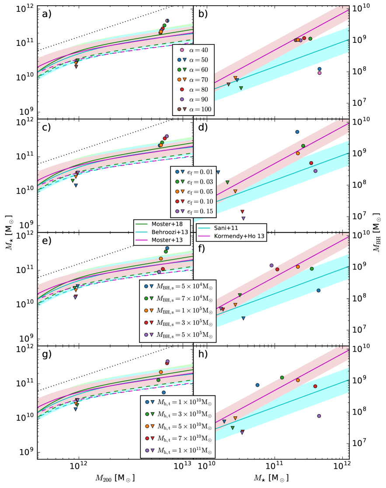
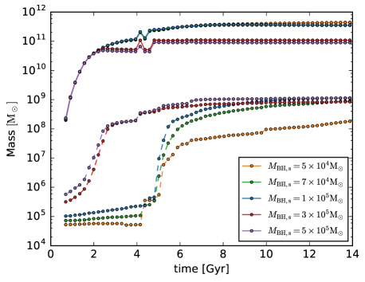
6.1 معامل التراكم
بالنسبة إلى المجرة g7.92e12، يبدو أن معامل التراكم له قيمة عتبة تبلغ نحو . ومن أجل لا يظهر التغير في الكتلة النجمية (الشكل 10a) اتجاها واضحا، لكنه قد يكون ذا طبيعة عشوائية. ولا تتغير كتلة الثقب الأسود تغيرا مهما (الشكل 10b)، مما يبين الطبيعة ذاتية التنظيم لتغذية الثقوب السوداء الراجعة. غير أنه من أجل تكون تغذية الثقب الأسود الراجعة غير كافية لخفض الكتلة النجمية كي تطابق علاقات - المرصودة (الشكل 10a)، وتهبط كتلة الثقب الأسود سريعا دون علاقات - المرصودة (الشكل 10b). أما بالنسبة إلى المجرة g8.26e11 فيبدو أن قيمة العتبة هذه أصغر، وربما يعود ذلك إلى الدقة الأعلى، إذ لا تبدي المحاكيات كلها إلا تغيرات صغيرة في علاقات - و- قد تكون ذات طبيعة عشوائية. لذلك يبدو أن معامل تراكم قدره اختيار معقول.
6.2 كفاءة التغذية الراجعة
تؤدي كفاءة التغذية الراجعة الأعلى إلى إخماد تراكم الغاز بواسطة الثقب الأسود، ومن ثم إلى كتلة ثقب أسود أقل (الشكل 10d). وتكون الكمية الكلية لطاقة التغذية الراجعة المحقونة في الغاز للمجرة g7.92e12 هي لقيم ، أي إن تغيير كفاءة التغذية الراجعة حتى بعامل 15 لا يغير طاقة التغذية الراجعة الكلية إلا بأقل من 20 في المئة. لذلك تعوض كفاءة التغذية الراجعة الأعلى بكتلة ثقب أسود أقل، مما يؤدي إلى طاقة تغذية راجعة كلية متقاربة، وهذا يبين مرة أخرى الطبيعة ذاتية التنظيم لتغذية الثقوب السوداء الراجعة. وتنخفض الكتلة النجمية انخفاضا طفيفا مع تناقص كفاءة التغذية الراجعة (الشكل 10c)، غير أن هذا الأثر صغير وقد يكون أيضا ذا طبيعة عشوائية. وتبالغ كفاءتا التغذية الراجعة 0.10 و0.15 كثيرا في توقع علاقة - للمجرة g7.92e12 (الشكل 10c)، في حين تقلل كفاءتا التغذية الراجعة 0.01 و0.03 كثيرا من توقع علاقة - للمجرة g8.26e11 (الشكل 10d)، مما يجعل كفاءة تغذية راجعة مقدارها اختيارا أمثل.
6.3 كتلة بذرة الثقب الأسود
توفر كتل البذور الصغيرة و تغذية راجعة غير كافية، مما يجعل المجرة g7.92e12 تتجاوز بشدة علاقات - المرصودة (الشكل 10e). أما كتل البذور العالية و فتجلب المجرة g7.92e12 إلى حواف علاقات - و- المرصودة (الشكل 10e,f)، تاركة كتلة بذرة بوصفها الاختيار الأمثل.
وفقا للشكل 10e,f لا تعتمد كتلة الثقب الأسود النهائية على كتلة بذرة الثقب الأسود (باستثناء أصغر كتلة بذرة)، بينما تعتمد عليها الكتلة النجمية النهائية. ويمكن تفسير ذلك بالشكل 11، الذي يبين كتلة الثقب الأسود والكتلة النجمية بوصفهما دالتين في الزمن للمجرة g7.92e12 ولكتل بذور ثقوب سوداء مختلفة. تبدي كتل بذور الثقوب السوداء الثلاث الأدنى تطور كتلة الثقب الأسود كما عرض في القسم 5: يكون معدل النمو منخفضا في البداية، ثم تحفز اندماجات الثقوب السوداء ‘نموا منفلتاً’ توقفه التغذية الراجعة بعد ذلك، ويؤدي في النهاية إلى كتل ثقوب سوداء متوافقة مع الرصد.
وتبدي كتلتا بذور الثقوب السوداء الأعلى تطورا مختلفا تماما: ليست اندماجات الثقوب السوداء مطلوبة، إذ إن كتلة البذرة عالية بما يكفي سلفا لتحفيز ‘النمو المنفلت’.
على الرغم من أن تطور كتل الثقوب السوداء في السيناريوهين مختلف تماما في الأزمنة المبكرة، فإنهما ينتجان كتل الثقوب السوداء النهائية نفسها (باستثناء أصغر كتلة بذرة)، ويمكن أن يعزى ذلك إلى الطبيعة ذاتية التنظيم لتغذية الثقوب السوداء الراجعة: فالثقوب السوداء الكبيرة تمارس تغذية راجعة قوية وتسمح بمعدل تراكم منخفض، بينما تمارس الثقوب السوداء الصغيرة تغذية راجعة ضعيفة وتسمح بمعدل تراكم مرتفع.
يبين الشكل 11 أيضا الكتلة النجمية بوصفها دالة في الزمن لكتل بذور ثقوب سوداء ابتدائية مختلفة. وحتى 2.5 جيغاسنة تتطور الكتل النجمية على نحو شبه متطابق، ثم تبدأ في التباعد: كلما ارتفعت كتلة بذرة الثقب الأسود بلغت ذروة معدل تراكم الثقب الأسود في وقت أبكر، ومن ثم يخمد تشكل النجوم في وقت أبكر، مما يثبت الكتل النجمية عند قيم أدنى فأدنى. والقفزات المفاجئة في الكتلة النجمية عند نحو 4-5 جيغاسنة ناتجة عن حدث اندماج.
تؤدي كتل بذور الثقوب السوداء المختلفة إلى كتلة الثقب الأسود نفسها، لكنها تؤدي إلى كتل نجمية مختلفة عند الانزياح الأحمر صفر. ومع ذلك يمكن استخدام المعايرة على علاقات التحجيم لتحديد الاختيار الأمثل لكتلة بذرة الثقب الأسود.
6.4 كتلة عتبة الهالة
تؤدي كتل عتبة الهالة العالية أو إلى مبالغة في توقع علاقة - (الشكل 10g) للمجرة g7.92e12، بينما يؤدي خفض كتلة عتبة الهالة إلى أو إلى نقل المجرة إلى حافة علاقات - المرصودة (الشكل 10h). لذلك فإن كتلة عتبة هالة مقدارها هي الاختيار الأكثر معقولية.
تشبه النتائج في الشكل 10g,h النتائج في الشكل 10e,f: فزيادة كتلة عتبة الهالة تكافئ خفض كتلة بذرة الثقب الأسود، ومن ثم ينتج المعدل نفسه بين كتلة عتبة الهالة وكتلة بذرة الثقب الأسود النتائج نفسها. ويمكن تفسير ذلك كما يأتي: تحدد كتلة عتبة الهالة أساسا زمن زرع بذرة الثقب الأسود. فإذا، مع معاملاتنا القياسية، زرع ثقب أسود بكتلة عند الزمن t، فإن زيادة كتلة عتبة الهالة تعني أن الثقب الأسود بكتلة يزرع عند الزمن t+dt، وخفض كتلة بذرة الثقب الأسود يعني أن ثقبا أسود بكتلة يزرع عند الزمن t. والحالة الأولى تكافئ الثانية، لأن الثقب الأسود بكتلة المزروع عند الزمن t سيكون قد نما إلى عند الزمن t+dt.
7 الخلاصة
نقدم ونختبر خوارزميات لتشكل الثقوب السوداء وتراكمها وتغذيتها الراجعة في مشروع NIHAO. بالنسبة إلى تشكل الثقوب السوداء نضع ثقبا أسود في مركز الهالة فور تجاوزها كتلة عتبة، وبالنسبة إلى تراكم الثقوب السوداء نستخدم صياغة Bondi-Hoyle-Lyttleton، وبالنسبة إلى تغذية الثقوب السوداء الراجعة نودع طاقة حرارية، متناسبة مع معدل تراكم الثقب الأسود، في الغاز المحيط بالثقب الأسود. وتسمح لنا هذه الإضافة إلى مشروع NIHAO بتوسيع مجموعة مجرات NIHAO إلى كتل أعلى.
تبدي مجراتنا اتفاقا جيدا مع علاقات - و- المرصودة التي نستخدمها لمعايرة المعاملات الحرة لنموذجنا. ونبحث أيضا تشتت هذه العلاقات وتطورها الزمني. يتناقص تشتت كلتا العلاقتين مع الزمن من أجل (قد تعاني الانزياحات الحمراء الأعلى من إحصاءات العدد الصغير وآثار زرع البذور)، كما أنه أدنى من التشتت المرصود، وربما لأننا نقيس التشتت الداخلي لهذه العلاقات من دون أي لايقينات رصدية.
في المجرات الإهليلجية عالية الكتلة يحدث إخماد تشكل النجوم بعد زيادة في معدل تراكم الثقب الأسود، مما يؤكد أن تشكل النجوم يخمد بفعل تغذية الثقب الأسود الراجعة. وتؤكد دراسة للمعاملات أننا اخترنا المعاملات المثلى ضمن إطار نموذجنا. وتوفر محاكياتنا أداة قيمة لدراسة أثر تغذية الثقوب السوداء الراجعة في تشكل المجرات وتطورها.
الشكر والتقدير
يعرب المؤلفون عن امتنانهم لمركز Gauss Centre for Supercomputing e.V. (www.gauss-centre.eu) لتمويل هذا المشروع بتوفير وقت حوسبة على الحاسوب الفائق GCS Supercomputer SuperMUC في Leibniz Supercomputing Centre (www.lrz.de). أجري جزء من هذا البحث على موارد الحوسبة عالية الأداء في New York University Abu Dhabi. استخدمنا حزمة البرمجيات pynbody Pontzen et al. (2013) في تحليلاتنا. يمول AO من Deutsche Forschungsgemeinschaft (DFG, German Research Foundation) - MO 2979/1-1. نشكر Tobias Buck على توفير الشروط الابتدائية لـ g7.92e12، وg1.05e13، وg1.44e13.
References
- Anglés-Alcázar et al. (2017) Anglés-Alcázar D., Faucher-Giguère C.-A., Quataert E., Hopkins P. F., Feldmann R., Torrey P., Wetzel A., Kereš D., 2017, MNRAS, 472, L109
- Bate et al. (1995) Bate M. R., Bonnell I. A., Price N. M., 1995, MNRAS, 277, 362
- Behroozi et al. (2013) Behroozi P. S., Wechsler R. H., Conroy C., 2013, ApJ, 770, 57
- Bondi (1952) Bondi H., 1952, MNRAS, 112, 195
- Bondi & Hoyle (1944) Bondi H., Hoyle F., 1944, MNRAS, 104, 273
- Booth & Schaye (2009) Booth C. M., Schaye J., 2009, MNRAS, 398, 53
- Booth & Schaye (2010) Booth C. M., Schaye J., 2010, MNRAS, 405, L1
- Chabrier (2003) Chabrier G., 2003, PASP, 115, 763
- Choi et al. (2012) Choi E., Ostriker J. P., Naab T., Johansson P. H., 2012, ApJ, 754, 125
- Colberg & Di Matteo (2008) Colberg J. M., Di Matteo T., 2008, MNRAS, 387, 1163
- Conroy & van Dokkum (2012) Conroy C., van Dokkum P. G., 2012, ApJ, 760, 71
- Croft et al. (2009) Croft R. A. C., Di Matteo T., Springel V., Hernquist L., 2009, MNRAS, 400, 43
- Croton et al. (2006) Croton D. J., et al., 2006, MNRAS, 365, 11
- Debuhr et al. (2011) Debuhr J., Quataert E., Ma C.-P., 2011, MNRAS, 412, 1341
- Debuhr et al. (2012) Debuhr J., Quataert E., Ma C.-P., 2012, MNRAS, 420, 2221
- Di Matteo et al. (2005) Di Matteo T., Springel V., Hernquist L., 2005, Nature, 433, 604
- Di Matteo et al. (2008) Di Matteo T., Colberg J., Springel V., Hernquist L., Sijacki D., 2008, ApJ, 676, 33
- Dolag et al. (2016) Dolag K., Komatsu E., Sunyaev R., 2016, MNRAS, 463, 1797
- Dubois et al. (2015) Dubois Y., Volonteri M., Silk J., Devriendt J., Slyz A., Teyssier R., 2015, MNRAS, 452, 1502
- Dutton & Macciò (2014) Dutton A. A., Macciò A. V., 2014, MNRAS, 441, 3359
- Dutton et al. (2013a) Dutton A. A., et al., 2013a, MNRAS, 428, 3183
- Dutton et al. (2013b) Dutton A. A., Macciò A. V., Mendel J. T., Simard L., 2013b, MNRAS, 432, 2496
- Dutton et al. (2015) Dutton A. A., Macciò A. V., Stinson G. S., Gutcke T. A., Penzo C., Buck T., 2015, MNRAS, 453, 2447
- Dutton et al. (2017) Dutton A. A., et al., 2017, MNRAS, 467, 4937
- Eddington (1921) Eddington A. S., 1921, Z. Phys., 7, 351
- Ferrarese & Merritt (2000) Ferrarese L., Merritt D., 2000, ApJ, 539, L9
- Gebhardt et al. (2000) Gebhardt K., et al., 2000, ApJ, 539, L13
- Genel et al. (2014) Genel S., et al., 2014, MNRAS, 445, 175
- Gill et al. (2004) Gill S. P. D., Knebe A., Gibson B. K., 2004, MNRAS, 351, 399
- Grand et al. (2016) Grand R. J. J., Springel V., Gómez F. A., Marinacci F., Pakmor R., Campbell D. J. R., Jenkins A., 2016, MNRAS, 459, 199
- Haardt & Madau (2012) Haardt F., Madau P., 2012, ApJ, 746, 125
- Häring & Rix (2004) Häring N., Rix H.-W., 2004, ApJ, 604, L89
- Hirschmann et al. (2014) Hirschmann M., Dolag K., Saro A., Bachmann L., Borgani S., Burkert A., 2014, MNRAS, 442, 2304
- Hopkins & Quataert (2011) Hopkins P. F., Quataert E., 2011, MNRAS, 415, 1027
- Hopkins et al. (2014) Hopkins P. F., Kereš D., Oñorbe J., Faucher-Giguère C.-A., Quataert E., Murray N., Bullock J. S., 2014, MNRAS, 445, 581
- Hoyle & Lyttleton (1939) Hoyle F., Lyttleton R. A., 1939, Proceedings of the Cambridge Philosophical Society, 35, 405
- Jahnke & Macciò (2011) Jahnke K., Macciò A. V., 2011, ApJ, 734, 92
- Johansson et al. (2009) Johansson P. H., Naab T., Burkert A., 2009, ApJ, 690, 802
- Keller et al. (2014) Keller B. W., Wadsley J., Benincasa S. M., Couchman H. M. P., 2014, MNRAS, 442, 3013
- Khandai et al. (2015) Khandai N., Di Matteo T., Croft R., Wilkins S., Feng Y., Tucker E., DeGraf C., Liu M.-S., 2015, MNRAS, 450, 1349
- Knollmann & Knebe (2009) Knollmann S. R., Knebe A., 2009, ApJS, 182, 608
- Kormendy & Ho (2013) Kormendy J., Ho L. C., 2013, ARA&A, 51, 511
- Kormendy & Richstone (1995) Kormendy J., Richstone D., 1995, ARA&A, 33, 581
- Macciò et al. (2016) Macciò A. V., Udrescu S. M., Dutton A. A., Obreja A., Wang L., Stinson G. R., Kang X., 2016, MNRAS, 463, L69
- Magorrian et al. (1998) Magorrian J., et al., 1998, AJ, 115, 2285
- Matthee et al. (2017) Matthee J., Schaye J., Crain R. A., Schaller M., Bower R., Theuns T., 2017, MNRAS, 465, 2381
- Moster et al. (2013) Moster B. P., Naab T., White S. D. M., 2013, MNRAS, 428, 3121
- Moster et al. (2018) Moster B. P., Naab T., White S. D. M., 2018, MNRAS, 477, 1822
- Munshi et al. (2013) Munshi F., et al., 2013, ApJ, 766, 56
- Pillepich et al. (2018) Pillepich A., et al., 2018, MNRAS, 473, 4077
- Planck Collaboration et al. (2014) Planck Collaboration et al., 2014, A&A, 571, A16
- Pontzen et al. (2013) Pontzen A., Roškar R., Stinson G. S., Woods R., Reed D. M., Coles J., Quinn T. R., 2013, pynbody: Astrophysics Simulation Analysis for Python
- Rosas-Guevara et al. (2015) Rosas-Guevara Y. M., et al., 2015, MNRAS, 454, 1038
- Salpeter (1964) Salpeter E. E., 1964, ApJ, 140, 796
- Sani et al. (2011) Sani E., Marconi A., Hunt L. K., Risaliti G., 2011, MNRAS, 413, 1479
- Santos-Santos et al. (2018) Santos-Santos I. M., Di Cintio A., Brook C. B., Macciò A., Dutton A., Domínguez-Tenreiro R., 2018, MNRAS, 473, 4392
- Schaye et al. (2010) Schaye J., et al., 2010, MNRAS, 402, 1536
- Schaye et al. (2015) Schaye J., et al., 2015, MNRAS, 446, 521
- Shakura & Sunyaev (1973) Shakura N. I., Sunyaev R. A., 1973, A&A, 24, 337
- Shen et al. (2010) Shen S., Wadsley J., Stinson G., 2010, MNRAS, 407, 1581
- Sijacki et al. (2007) Sijacki D., Springel V., Di Matteo T., Hernquist L., 2007, MNRAS, 380, 877
- Sijacki et al. (2015) Sijacki D., Vogelsberger M., Genel S., Springel V., Torrey P., Snyder G. F., Nelson D., Hernquist L., 2015, MNRAS, 452, 575
- Springel et al. (2005) Springel V., Di Matteo T., Hernquist L., 2005, MNRAS, 361, 776
- Stinson et al. (2006) Stinson G., Seth A., Katz N., Wadsley J., Governato F., Quinn T., 2006, MNRAS, 373, 1074
- Stinson et al. (2013) Stinson G. S., Brook C., Macciò A. V., Wadsley J., Quinn T. R., Couchman H. M. P., 2013, MNRAS, 428, 129
- Tremmel et al. (2015) Tremmel M., Governato F., Volonteri M., Quinn T. R., 2015, MNRAS, 451, 1868
- Tremmel et al. (2017) Tremmel M., Karcher M., Governato F., Volonteri M., Quinn T. R., Pontzen A., Anderson L., Bellovary J., 2017, MNRAS, 470, 1121
- Vogelsberger et al. (2014) Vogelsberger M., et al., 2014, MNRAS, 444, 1518
- Wadsley et al. (2004) Wadsley J. W., Stadel J., Quinn T., 2004, New Astron., 9, 137
- Wadsley et al. (2017) Wadsley J. W., Keller B. W., Quinn T. R., 2017, MNRAS, 471, 2357
- Wang et al. (2015) Wang L., Dutton A. A., Stinson G. S., Macciò A. V., Penzo C., Kang X., Keller B. W., Wadsley J., 2015, MNRAS, 454, 83
- Wechsler & Tinker (2018) Wechsler R. H., Tinker J. L., 2018, ARA&A, 56, 435
- Weinberger et al. (2018) Weinberger R., et al., 2018, MNRAS, 479, 4056
- Wurster & Thacker (2013) Wurster J., Thacker R. J., 2013, MNRAS, 431, 2513
| galaxy | ||||||
| g7.55e11 | 932961 | 431968 | 327418 | 11.92 | 10.31 | 7.41 |
| g8.26e11 | 1070666 | 496667 | 424753 | 11.97 | 10.42 | 7.80 |
| g1.12e12 | 1062175 | 516394 | 430205 | 11.98 | 10.42 | 7.78 |
| g1.92e12 | 1960845 | 1035887 | 736102 | 12.28 | 10.66 | 8.25 |
| g2.79e12 | 3383907 | 1663073 | 1395558 | 12.49 | 10.93 | 8.39 |
| g7.55e11 | 1185149 | 455930 | 483752 | 11.95 | 10.49 | - |
| g8.26e11 | 1513265 | 518236 | 739749 | 12.01 | 10.67 | - |
| g1.12e12 | 1977112 | 564785 | 1222359 | 12.05 | 10.90 | - |
| g1.92e12 | 4018048 | 1200667 | 2467821 | 12.37 | 11.20 | - |
| g2.79e12 | 5598386 | 1800095 | 3099962 | 12.55 | 11.29 | - |
| g1.26e12 | 1253780 | 563159 | 462669 | 12.03 | 10.46 | 7.55 |
| g1.27e12 | 1150753 | 471966 | 605247 | 11.94 | 10.57 | 7.84 |
| g1.55e12 | 1469159 | 600775 | 679269 | 12.06 | 10.61 | 7.86 |
| g1.62e12 | 1063633 | 533023 | 327877 | 12.00 | 10.31 | 7.61 |
| g2.37e12 | 2159202 | 1098881 | 881920 | 12.30 | 10.73 | 8.30 |
| g2.71e12 | 2164500 | 1195318 | 596766 | 12.35 | 10.55 | 8.19 |
| g3.74e12 | 3397933 | 1715201 | 1182008 | 12.51 | 10.83 | 8.47 |
| g4.41e12 | 463537 | 250487 | 204647 | 12.55 | 10.83 | 8.84 |
| g4.55e12 | 503192 | 270807 | 164411 | 12.60 | 10.88 | 8.69 |
| g4.81e12 | 594745 | 306880 | 211336 | 12.66 | 11.01 | 8.70 |
| g4.84e12 | 523621 | 267346 | 185147 | 12.60 | 10.93 | 8.66 |
| g5.22e12 | 592556 | 313138 | 187130 | 12.67 | 10.96 | 8.58 |
| g5.41e12 | 644421 | 290846 | 352249 | 12.62 | 11.23 | 9.14 |
| g5.53e12 | 547812 | 306764 | 183274 | 12.65 | 10.83 | 8.69 |
| g6.53e12 | 591850 | 276231 | 266355 | 12.61 | 11.10 | 8.73 |
| g6.57e12 | 763439 | 356974 | 303556 | 12.73 | 11.15 | 8.75 |
| g6.86e12 | 838063 | 430471 | 303160 | 12.80 | 11.03 | 8.90 |
| g6.70e12 | 1290678 | 431794 | 693967 | 12.83 | 11.54 | 8.83 |
| g7.50e12 | 648889 | 387253 | 259728 | 12.74 | 11.08 | 9.32 |
| g7.55e12 | 860302 | 433196 | 262410 | 12.81 | 10.95 | 8.79 |
| g7.71e12 | 823620 | 415601 | 312032 | 12.79 | 11.17 | 8.94 |
| g7.92e12 | 1323285 | 446337 | 731566 | 12.84 | 11.55 | 9.06 |
| g8.08e12 | 1003594 | 486702 | 364796 | 12.86 | 11.22 | 9.00 |
| g8.45e12 | 779820 | 368069 | 308291 | 12.74 | 11.17 | 8.80 |
| g1.05e13 | 1146928 | 573974 | 489758 | 12.92 | 11.34 | 9.18 |
| g1.14e13 | 1354041 | 646068 | 532474 | 12.98 | 11.41 | 9.16 |
| g1.17e13 | 2085075 | 889400 | 782176 | 13.14 | 11.32 | 8.92 |
| g1.25e13 | 1217182 | 673068 | 367429 | 13.00 | 11.18 | 9.18 |
| g1.33e13 | 1918776 | 809672 | 751999 | 13.09 | 11.58 | 9.24 |
| g1.44e13 | 2836084 | 876310 | 1474963 | 13.14 | 11.86 | 8.94 |
| g1.54e13 | 1456656 | 722348 | 500173 | 13.03 | 11.36 | 9.17 |
| g1.57e13 | 889955 | 436443 | 310259 | 12.81 | 11.16 | 8.85 |
| g1.63e13 | 2089314 | 953300 | 684168 | 13.16 | 11.43 | 9.25 |
| g1.87e13 | 2278215 | 1101553 | 636663 | 13.23 | 11.39 | 9.29 |
| g2.02e13 | 1947099 | 1056092 | 840843 | 13.18 | 11.59 | 9.59 |
| g2.07e13 | 3177787 | 1497578 | 1020594 | 13.36 | 11.47 | 9.45 |
| g2.10e13 | 2972176 | 1249734 | 1072224 | 13.29 | 11.68 | 9.33 |
| g2.11e13 | 2434943 | 1250655 | 955862 | 13.26 | 11.63 | 9.45 |
| g2.20e13 | 1437878 | 847511 | 578127 | 13.08 | 11.41 | 9.46 |
| g2.37e13 | 2872994 | 1497621 | 1030754 | 13.34 | 11.59 | 9.54 |
| g2.58e13 | 3951084 | 1782390 | 1347000 | 13.44 | 11.66 | 9.47 |
| g3.26e13 | 4333704 | 2100752 | 1118595 | 13.51 | 11.45 | 9.52 |
| g3.42e12 | 2620934 | 1068134 | 1313357 | 12.30 | 10.91 | 8.12 |
| g3.78e13 | 3462973 | 1607283 | 1074439 | 13.39 | 11.51 | 9.45 |
| g3.89e13 | 5426667 | 2281160 | 1751607 | 13.55 | 11.81 | 9.70 |
| g5.41e12 | 1265524 | 337582 | 778618 | 12.73 | 11.59 | - |
| g6.86e12 | 1656812 | 453120 | 975692 | 12.86 | 11.69 | - |
| g7.50e12 | 1478432 | 443431 | 834490 | 12.85 | 11.62 | - |
| g7.92e12 | 1546499 | 455160 | 925496 | 12.85 | 11.65 | - |
| g1.05e13 | 2286298 | 658752 | 1301680 | 13.02 | 11.75 | - |
| g1.44e13 | 2738604 | 878724 | 1374316 | 13.14 | 11.83 | - |